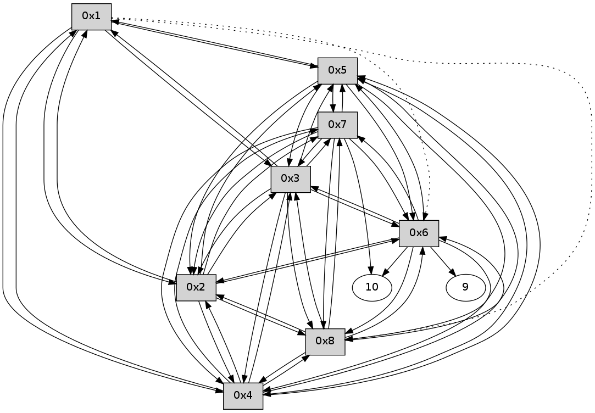

>> << IDX [start] -100 -25 -5 +0 +5 +25 +100 [195.044962883]
 Previous packets
----------------------------------------------------------------------
190.063313 beacon01(11f6) #0 coord=01,02,03,04,05,06,07,08,0a,09 cycle=688.0ms assoc
-- color-indic=0 64 36 ab
190.073489 beacon02(11f6) #0 coord=01,02,03,04,05,06,07,08,0a,09 cycle=688.0ms assoc 64 a5 9a
190.083448 beacon03(11f6) #0 coord=01,02,03,04,05,06,07,08,0a,09 cycle=688.0ms assoc 64 df d7
190.093448 beacon04(11f6) #0 coord=01,02,03,04,05,06,07,08,0a,09 cycle=688.0ms assoc 64 a8 3d
190.103449 beacon05(11f6) #0 coord=01,02,03,04,05,06,07,08,0a,09 cycle=688.0ms assoc 64 d2 70
190.113450 beacon06(11f6) #0 coord=01,02,03,04,05,06,07,08,0a,09 cycle=688.0ms assoc 64 5c a7
190.123450 beacon07(11f6) #0 coord=01,02,03,04,05,06,07,08,0a,09 cycle=688.0ms assoc 64 26 ea
190.133451 beacon08(11f6) #0 coord=01,02,03,04,05,06,07,08,0a,09 cycle=688.0ms assoc 64 a3 7b
190.288180 [Hello(1): seq=68 sym=5,3,2,4 asym=8,6 sysInfo= stat=5:0,0,0,0/3:3,0,0,0/2:12,0,0,0/4:0,0,0,0/8:2,0,0,0/6:1,0,0,0]
----------------------------------------------------------------------
190.851449 beacon01(11f6) #0 coord=01,02,03,04,05,06,07,08,0a,09 cycle=688.0ms assoc
-- color-indic=0 64 f2 a5
190.861606 beacon02(11f6) #0 coord=01,02,03,04,05,06,07,08,0a,09 cycle=688.0ms assoc 64 61 94
190.871584 beacon03(11f6) #0 coord=01,02,03,04,05,06,07,08,0a,09 cycle=688.0ms assoc 64 1b d9
190.881584 beacon04(11f6) #0 coord=01,02,03,04,05,06,07,08,0a,09 cycle=688.0ms assoc 64 6c 33
190.891585 beacon05(11f6) #0 coord=01,02,03,04,05,06,07,08,0a,09 cycle=688.0ms assoc 64 16 7e
190.911586 beacon07(11f6) #0 coord=01,02,03,04,05,06,07,08,0a,09 cycle=688.0ms assoc 64 e2 e4
190.921589 beacon08(11f6) #0 coord=01,02,03,04,05,06,07,08,0a,09 cycle=688.0ms assoc 64 67 75
190.979859 [Hello(6): seq=68 sym=10,7,5,3,8,4,2 sysInfo= stat=10:3,0,0,0/7:13,0,0,0/5:8,0,0,0/3:14,0,0,0/8:2,0,0,0/4:5,0,0,0/2:5,0,0,0]
190.984604 [Hello(8): seq=68 sym=2,7,5,6,3,4 sysInfo= stat=2:7,0,0,0/7:13,0,0,0/5:14,0,0,0/6:3,0,0,0/3:12,0,0,0/4:15,0,0,0]
191.019147 [Hello(3): seq=68 sym=1,2,7,5,6,8,4 sysInfo= stat=1:4,0,0,0/2:13,0,0,0/7:10,0,0,0/5:0,0,0,0/6:15,0,0,0/8:2,0,0,0/4:2,0,0,0]
191.047125 [Hello(4): seq=68 sym=1,2,5,6,3,8,7 sysInfo= stat=1:3,0,0,0/2:14,0,0,0/5:0,0,0,0/6:14,0,0,0/3:3,0,0,0/8:1,0,0,0/7:2,0,0,0]
191.049895 [Hello(5): seq=68 sym=1,2,7,6,3,8,4 sysInfo= stat=1:4,0,0,0/2:13,0,0,0/7:11,0,0,0/6:15,0,0,0/3:2,0,0,0/8:2,0,0,0/4:1,0,0,0]
191.080100 [Hello(7): seq=68 sym=10,5,6,8,3,2,4 sysInfo= stat=10:10,0,0,0/5:15,0,0,0/6:4,0,0,0/8:4,0,0,0/3:10,0,0,0/2:4,0,0,0/4:2,0,0,0]
191.100145 [Hello(2): seq=68 sym=1,7,5,3,8,4,6 sysInfo= stat=1:3,0,0,0/7:11,0,0,0/5:1,0,0,0/3:2,0,0,0/8:2,0,0,0/4:0,0,0,0/6:10,0,0,0]
----------------------------------------------------------------------
191.639587 beacon01(11f6) #0 coord=01,02,03,04,05,06,07,08,0a,09 cycle=688.0ms assoc
-- color-indic=0 64 4e a0
191.649762 beacon02(11f6) #0 coord=01,02,03,04,05,06,07,08,0a,09 cycle=688.0ms assoc 64 dd 91
191.659722 beacon03(11f6) #0 coord=01,02,03,04,05,06,07,08,0a,09 cycle=688.0ms assoc 64 a7 dc
191.669723 beacon04(11f6) #0 coord=01,02,03,04,05,06,07,08,0a,09 cycle=688.0ms assoc 64 d0 36
191.679723 beacon05(11f6) #0 coord=01,02,03,04,05,06,07,08,0a,09 cycle=688.0ms assoc 64 aa 7b
191.689723 beacon06(11f6) #0 coord=01,02,03,04,05,06,07,08,0a,09 cycle=688.0ms assoc 64 24 ac
191.699726 beacon07(11f6) #0 coord=01,02,03,04,05,06,07,08,0a,09 cycle=688.0ms assoc 64 5e e1
191.709728 beacon08(11f6) #0 coord=01,02,03,04,05,06,07,08,0a,09 cycle=688.0ms assoc 64 db 70
191.871758 [Hello(1): seq=69 sym=5,3,2,4 asym=8,6 sysInfo= stat=5:1,0,0,0/3:4,0,0,0/2:13,0,0,0/4:1,0,0,0/8:3,0,0,0/6:2,0,0,0]
----------------------------------------------------------------------
192.427724 beacon01(11f6) #0 coord=01,02,03,04,05,06,07,08,0a,09 cycle=688.0ms assoc
-- color-indic=0 64 7a b8
192.437883 beacon02(11f6) #0 coord=01,02,03,04,05,06,07,08,0a,09 cycle=688.0ms assoc 64 e9 89
192.447859 beacon03(11f6) #0 coord=01,02,03,04,05,06,07,08,0a,09 cycle=688.0ms assoc 64 93 c4
192.457859 beacon04(11f6) #0 coord=01,02,03,04,05,06,07,08,0a,09 cycle=688.0ms assoc 64 e4 2e
192.467861 beacon05(11f6) #0 coord=01,02,03,04,05,06,07,08,0a,09 cycle=688.0ms assoc 64 9e 63
192.477860 beacon06(11f6) #0 coord=01,02,03,04,05,06,07,08,0a,09 cycle=688.0ms assoc 64 10 b4
192.487862 beacon07(11f6) #0 coord=01,02,03,04,05,06,07,08,0a,09 cycle=688.0ms assoc 64 6a f9
192.497865 beacon08(11f6) #0 coord=01,02,03,04,05,06,07,08,0a,09 cycle=688.0ms assoc 64 ef 68
192.533387 [Hello(8): seq=69 sym=2,7,5,6,3,4 sysInfo= stat=2:8,0,0,0/7:14,0,0,0/5:15,0,0,0/6:4,0,0,0/3:13,0,0,0/4:0,0,0,0]
192.566365 [Hello(6): seq=69 sym=10,7,5,3,8,4,2 sysInfo= stat=10:4,0,0,0/7:14,0,0,0/5:9,0,0,0/3:15,0,0,0/8:4,0,0,0/4:6,0,0,0/2:6,0,0,0]
192.569449 [Hello(5): seq=69 sym=1,2,7,6,3,8,4 sysInfo= stat=1:5,0,0,0/2:14,0,0,0/7:12,0,0,0/6:15,0,0,0/3:2,0,0,0/8:3,0,0,0/4:2,0,0,0]
192.580734 [Hello(3): seq=69 sym=1,2,7,5,6,8,4 sysInfo= stat=1:5,0,0,0/2:14,0,0,0/7:11,0,0,0/5:2,0,0,0/6:0,0,0,0/8:3,0,0,0/4:3,0,0,0]
192.662077 [Hello(2): seq=69 sym=1,7,5,3,8,4,6 sysInfo= stat=1:4,0,0,0/7:11,0,0,0/5:2,0,0,0/3:3,0,0,0/8:3,0,0,0/4:0,0,0,0/6:11,0,0,0]
192.670737 [Hello(7): seq=69 sym=10,5,6,8,3,2,4 sysInfo= stat=10:11,0,0,0/5:15,0,0,0/6:5,0,0,0/8:5,0,0,0/3:11,0,0,0/2:6,0,0,0/4:2,0,0,0]
192.676130 [Hello(4): seq=69 sym=1,2,5,6,3,8,7 sysInfo= stat=1:4,0,0,0/2:0,0,0,0/5:2,0,0,0/6:15,0,0,0/3:4,0,0,0/8:2,0,0,0/7:4,0,0,0]
----------------------------------------------------------------------
193.215860 beacon01(11f6) #0 coord=01,02,03,04,05,06,07,08,0a,09 cycle=688.0ms assoc
-- color-indic=0 64 c6 bd
193.226026 beacon02(11f6) #0 coord=01,02,03,04,05,06,07,08,0a,09 cycle=688.0ms assoc 64 55 8c
193.235996 beacon03(11f6) #0 coord=01,02,03,04,05,06,07,08,0a,09 cycle=688.0ms assoc 64 2f c1
193.245995 beacon04(11f6) #0 coord=01,02,03,04,05,06,07,08,0a,09 cycle=688.0ms assoc 64 58 2b
193.255996 beacon05(11f6) #0 coord=01,02,03,04,05,06,07,08,0a,09 cycle=688.0ms assoc 64 22 66
193.265996 beacon06(11f6) #0 coord=01,02,03,04,05,06,07,08,0a,09 cycle=688.0ms assoc 64 ac b1
193.275996 beacon07(11f6) #0 coord=01,02,03,04,05,06,07,08,0a,09 cycle=688.0ms assoc 64 d6 fc
193.285999 beacon08(11f6) #0 coord=01,02,03,04,05,06,07,08,0a,09 cycle=688.0ms assoc 64 53 6d
193.341080 [Hello(1): seq=70 sym=5,3,2,4 asym=8,6 sysInfo= stat=5:2,0,0,0/3:5,0,0,0/2:14,0,0,0/4:2,0,0,0/8:4,0,0,0/6:3,0,0,0]
----------------------------------------------------------------------
194.003996 beacon01(11f6) #0 coord=01,02,03,04,05,06,07,08,0a,09 cycle=688.0ms assoc
-- color-indic=0 64 02 b3
194.014156 beacon02(11f6) #0 coord=01,02,03,04,05,06,07,08,0a,09 cycle=688.0ms assoc 64 91 82
194.024131 beacon03(11f6) #0 coord=01,02,03,04,05,06,07,08,0a,09 cycle=688.0ms assoc 64 eb cf
194.034131 beacon04(11f6) #0 coord=01,02,03,04,05,06,07,08,0a,09 cycle=688.0ms assoc 64 9c 25
194.044132 beacon05(11f6) #0 coord=01,02,03,04,05,06,07,08,0a,09 cycle=688.0ms assoc 64 e6 68
194.054132 beacon06(11f6) #0 coord=01,02,03,04,05,06,07,08,0a,09 cycle=688.0ms assoc 64 68 bf
194.064131 beacon07(11f6) #0 coord=01,02,03,04,05,06,07,08,0a,09 cycle=688.0ms assoc 64 12 f2
194.074137 beacon08(11f6) #0 coord=01,02,03,04,05,06,07,08,0a,09 cycle=688.0ms assoc 64 97 63
194.163320 [Hello(4): seq=70 sym=1,2,5,6,3,8,7 sysInfo= stat=1:5,0,0,0/2:0,0,0,0/5:2,0,0,0/6:15,0,0,0/3:4,0,0,0/8:2,0,0,0/7:4,0,0,0]
194.170610 [Hello(7): seq=70 sym=10,5,6,8,3,2,4 sysInfo= stat=10:12,0,0,0/5:15,0,0,0/6:5,0,0,0/8:5,0,0,0/3:11,0,0,0/2:6,0,0,0/4:4,0,0,0]
194.175654 [Hello(6): seq=70 sym=10,7,5,3,8,4,2,9 sysInfo= stat=10:6,0,0,0/7:0,0,0,0/5:9,0,0,0/3:0,0,0,0/8:4,0,0,0/4:8,0,0,0/2:7,0,0,0/9:0,0,0,0]
194.204345 [Hello(8): seq=70 sym=2,7,5,6,3,4 sysInfo= stat=2:9,0,0,0/7:0,0,0,0/5:15,0,0,0/6:6,0,0,0/3:14,0,0,0/4:2,0,0,0]
194.209047 [Hello(2): seq=70 sym=1,7,5,3,8,4,6 sysInfo= stat=1:5,0,0,0/7:13,0,0,0/5:2,0,0,0/3:3,0,0,0/8:3,0,0,0/4:2,0,0,0/6:12,0,0,0]
194.218615 [Hello(3): seq=70 sym=1,2,7,5,6,8,4 sysInfo= stat=1:6,0,0,0/2:0,0,0,0/7:13,0,0,0/5:2,0,0,0/6:1,0,0,0/8:4,0,0,0/4:5,0,0,0]
194.222970 [Hello(5): seq=70 sym=1,2,7,6,3,8,4 sysInfo= stat=1:6,0,0,0/2:0,0,0,0/7:14,0,0,0/6:1,0,0,0/3:3,0,0,0/8:4,0,0,0/4:4,0,0,0]
----------------------------------------------------------------------
194.792132 beacon01(11f6) #0 coord=01,02,03,04,05,06,07,08,0a,09 cycle=688.0ms assoc
-- color-indic=0 64 be b6
194.802290 beacon02(11f6) #0 coord=01,02,03,04,05,06,07,08,0a,09 cycle=688.0ms assoc 64 2d 87
194.812267 beacon03(11f6) #0 coord=01,02,03,04,05,06,07,08,0a,09 cycle=688.0ms assoc 64 57 ca
194.822267 beacon04(11f6) #0 coord=01,02,03,04,05,06,07,08,0a,09 cycle=688.0ms assoc 64 20 20
194.832267 beacon05(11f6) #0 coord=01,02,03,04,05,06,07,08,0a,09 cycle=688.0ms assoc 64 5a 6d
194.852269 beacon07(11f6) #0 coord=01,02,03,04,05,06,07,08,0a,09 cycle=688.0ms assoc 64 ae f7
194.862272 beacon08(11f6) #0 coord=01,02,03,04,05,06,07,08,0a,09 cycle=688.0ms assoc 64 2b 66